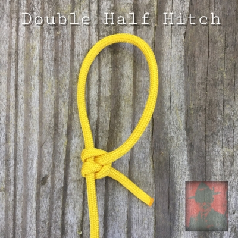
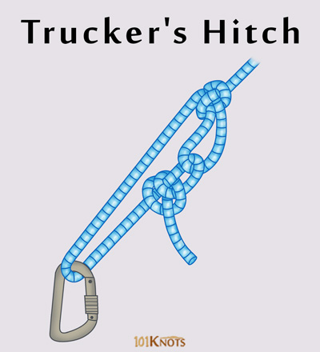

Los nudos de utilidades están hechos para diversas tareas de la vida diaria, algunos soportan mayores pesos y tensiones que otros.

Half Hitch
El nudo Half Hitch es muy útil ya que se puede aplicar a diversas situaciones de la vida real.
No está hecho para cargas muy pesadas como remolques.

Trucker's Hitch
Este nudo se especializa en tensar cargar en camiones (de ahí el nombre), se necesita
un punto fijo de donde anclar la cuerda. Permite tensar cargas pesadas.